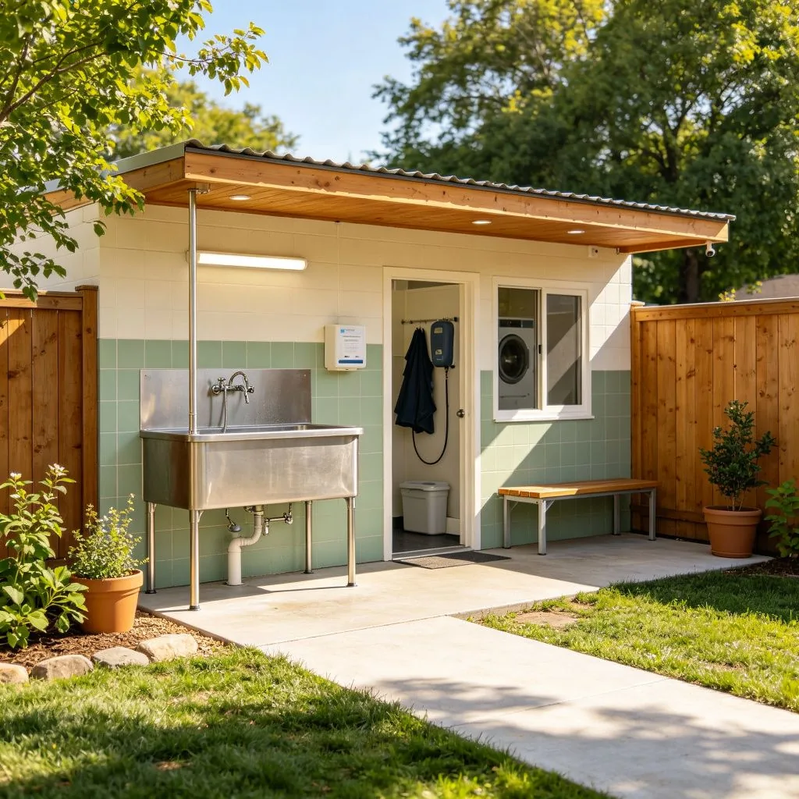

在一個溫馨的浴室裡，一隻柯基犬坐在木質浴缸中，周圍是豐富的泡泡。牠的頭從泡泡中探出來，耳朵上沾著幾個泡泡，表情既無辜又享受，彷彿在說：「這就是傳說中的狗狗SPA嗎？」這個畫面，或許就是每隻狗狗夢想中的洗澡時光。但對很多狗狗來說，洗澡卻是一件可怕的事情。如何讓狗狗愛上洗澡？正確的洗澡方式是什麼？
狗狗洗澡的頻率
狗狗不需要像人類一樣頻繁洗澡。過度洗澡會破壞狗狗皮膚和毛髮的天然油脂，導致皮膚乾燥、毛髮粗糙、甚至皮膚炎。一般來說：
- 室內犬：每2-4週洗一次澡即可。如果狗狗比較乾淨，甚至可以延長到6-8週。
- 戶外犬：每1-2週洗一次澡，視活動量和骯髒程度而定。
- 長毛犬：需要更頻繁的洗澡和梳理，一般每1-2週一次。
- 短毛犬：皮膚和毛髮較容易護理，每2-4週洗一次即可。
- 皮膚病狗狗：遵從獸醫的建議，可能需要使用藥用洗毛精更頻繁地洗澡。
除了定期洗澡，平時的梳理也很重要。每天梳理狗狗的毛髮可以去除死毛、灰塵和雜物，促進血液循環，讓毛髮更加健康有光澤。同時，梳理也是檢查狗狗皮膚狀況的好時機，可以及時發現寄生蟲、皮膚炎或其他異常。

正確的洗澡步驟
以下是正確的狗狗洗澡步驟：
- 準備工作：在洗澡前先梳理狗狗的毛髮，去除打結和死毛。準備好洗毛精、護髮素（可選）、毛巾、吹風機、棉花球（塞耳朵防止進水）和洗澡刷。確保浴室溫度舒適，水溫在38-40°C左右（類似狗狗的體溫）。
- 打濕毛髮：用花灑或杯子將狗狗的毛髮完全打濕。注意不要把水直接噴在狗狗的臉上和耳朵裡。可以用濕毛巾輕輕擦拭臉部。
- 使用洗毛精：將適量的狗狗專用洗毛精稀釋後均勻塗抹在狗狗身上，從頸部開始，向後按摩至全身。避免使用人類洗髮精或沐浴露，因為人類產品的酸鹼值不適合狗狗的皮膚，可能導致皮膚乾燥和刺激。
- 沖洗乾淨：用溫水徹底沖洗狗狗的毛髮，確保沒有洗毛精殘留。殘留的洗毛精會導致皮膚癢和刺激。可以重複沖洗2-3次，確保完全乾淨。
- 使用護髮素（可選）：對於長毛犬或毛髮乾燥的狗狗，可以使用狗狗專用護髮素，停留幾分鐘後沖洗乾淨。護髮素可以讓毛髮更加柔軟、容易梳理。
- 擦乾和吹乾：先用毛巾輕輕按壓狗狗的毛髮，吸收多餘水分。不要用力揉搓，以免毛髮打結。然後用吹風機（低溫檔）將毛髮吹乾，同時用梳子梳理。確保毛髮完全吹乾，尤其是皮膚皺褶處和長毛犬的底毛，以免潮濕引起皮膚炎。
- 最後梳理：毛髮完全乾燥後，再次梳理狗狗的毛髮，去除打結和死毛，讓毛髮蓬鬆有光澤。
讓狗狗愛上洗澡的小技巧
很多狗狗害怕洗澡，以下是一些讓狗狗愛上洗澡的小技巧：
- 從小適應：在狗狗幼犬時期就開始讓牠接觸洗澡，從短時間、低壓力的體驗開始，逐漸增加時間和難度。
- 正向獎勵：在洗澡過程中不斷給予狗狗零食和表揚，讓狗狗把洗澡與愉快的體驗聯繫起來。洗澡後也可以給予特別的獎勵（如最愛的玩具或零食）。
- 避免負面體驗：不要在洗澡時懲罰狗狗，不要讓水進入狗狗的眼睛和耳朵，不要使用過熱或過冷的水。確保洗澡過程是舒適和安全的。
- 使用合適的工具：使用狗狗專用的洗毛精和護髮素，選擇合適的洗澡刷和毛巾。可以使用防滑墊，讓狗狗在浴缸中站得更穩。
- 逐漸適應：如果狗狗非常害怕洗澡，可以先從讓狗狗在空浴缸中玩耍開始，然後逐漸加入少量水，最後再進行完整的洗澡流程。給狗狗足夠的時間來適應。
狗狗洗澡的常見誤區
1. 使用人類洗髮精：人類產品的酸鹼值不適合狗狗皮膚，會導致皮膚乾燥和刺激。2. 過度洗澡：會破壞皮膚天然油脂，導致皮膚問題。3. 水溫過高：狗狗的皮膚比人類敏感，過熱的水會燙傷狗狗。4. 沒有完全吹乾：潮濕的毛髮和皮膚容易引起皮膚炎和黴菌感染。5. 洗澡前不梳理：打結的毛髮遇水後會更加難以梳理，甚至需要剪毛。6. 讓水進入耳朵：容易引起中耳炎，洗澡時可以用棉花球輕輕塞住耳朵。

泡泡浴的柯基，用牠的享受和從容，告訴我們洗澡也可以是一件愉快的事情。正確的洗澡方式不僅可以讓狗狗保持清潔和美觀，還可以促進皮膚和毛髮的健康，增進主人與狗狗的感情。或許，下次幫狗狗洗澡時，你也可以準備一些泡泡和零食，讓洗澡變成一場狗狗SPA時光。